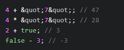
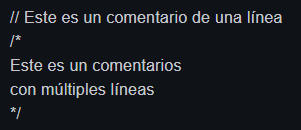

Es un lenguaje interpretado, orientado a objetos, débilmente tipado, dinámico y compatible. Es un lenguaje de programación que se utiliza para hacer páginas web interactivas. Es una de las tres tecnologías web principales, junto con HTML, CSS y es compatible con todos los navegadores web modernos actualmente.
Que es débilmente tipado: Es el tipo de una variable no está estrictamente definido y que puede ser reasignada a valores de diferentes tipos de datos. Se pueden hacer operaciones entre tipos distintos de datos (enteros con strings, booleanos con enteros, etc). Ejemplo:
Que es dinámico: Corre directamente en la etapa de Runetime sin una etapa de compilación previa. Esto permite probar nuestro código inmediatamente; pero también es lo que hace que los errores se muestren hasta que se ejecuta el programa. El navegador lee linea por linea el código, el cuál le indica lo que tiene que hacer, sin la necesidad de compilar. Todo esto es controlado por el motor de Javascript V8 del navegador.
Que es compatible: Todas las funciones nuevas que salen de Javascript no dañarán el trabajo ya hecho, pero no se podrá utilizar en nuestro entorno de trabajo inmediatamente. Para solucionar esto está Babel que permite utilizar las nuevas características del lenguaje pero lo transforma a una versión que el navegador pueda entender.
En JavaScript existe dos componentes principales: datos que guardamos en memoria y tareas que haremos con esos datos. Estos conforman los elementos de un lenguaje de programación.
Los comentarios que el compilador de JavaScript ignorará. Existen dos maneras: en una sola línea con //; y en múltiples líneas utilizando /* */.
Los tipos de datos es la característica propia que tiene un valor. En JavaScript existen los tipos de datos primitivos y los no primitivos.
Los tipos de datos primitivos son los siguientes:
Los tipos de datos de objeto o no primitivos son los siguientes:
La palabra reservada typeof permite identificar el tipo de dato de un valor en JavaScript. Existe una excepción, al ejecutar typeof null, en la consola mostrará 'object', esto es un error dentro JavaScript.